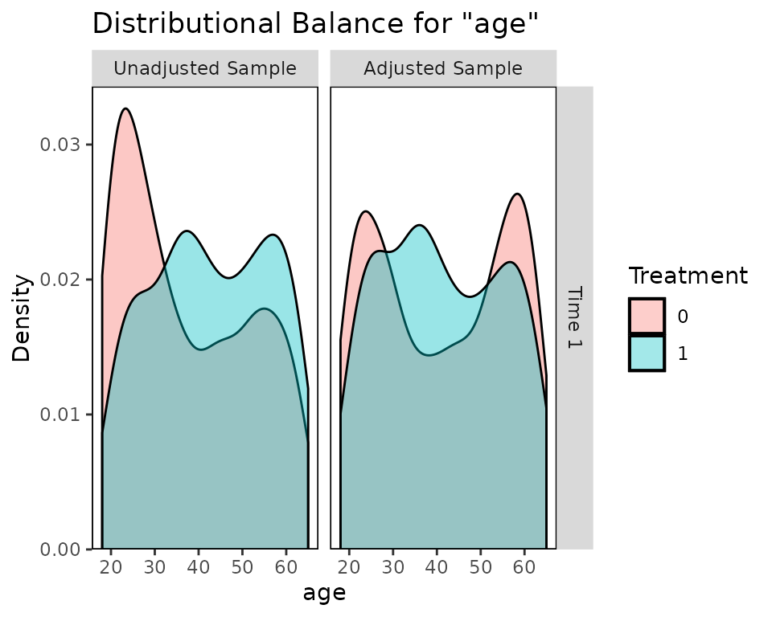
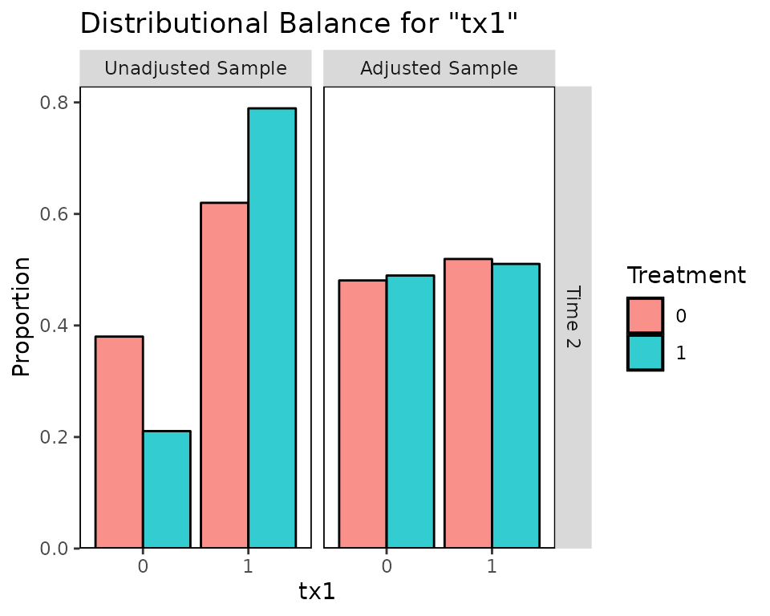
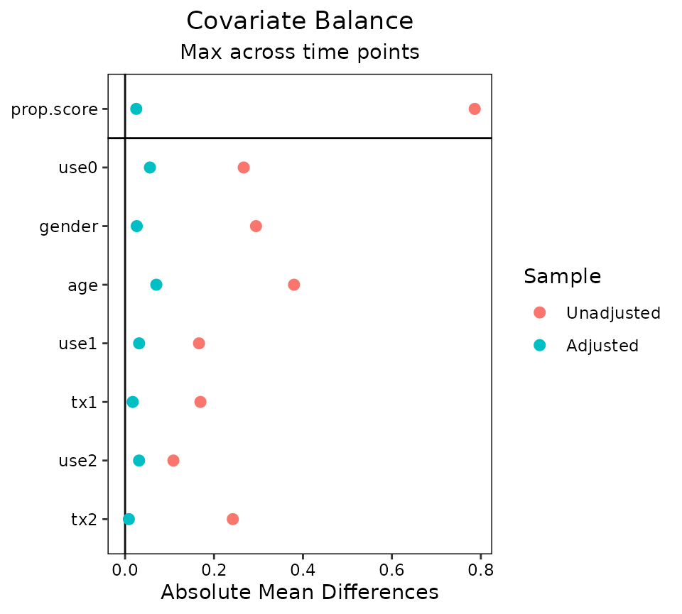
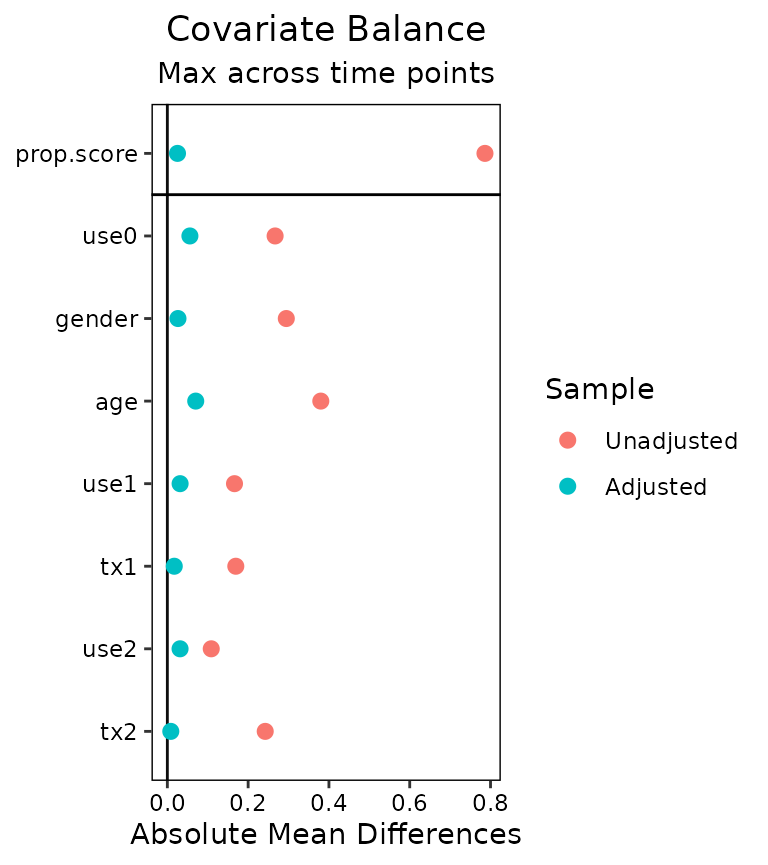

vignettes/cobalt_A3_longitudinal_treat.Rmd
cobalt_A3_longitudinal_treat.RmdThis is an introduction to the use of cobalt with longitudinal treatments. These occur when there are multiple treatment periods spaced over time, with the potential for time-dependent confounding to occur. A common way to estimate treatment effects in these scenarios is to use marginal structural models (MSM), weighted by balancing weights. The goal of applying weights is to simulate a sequential randomization design, where the probability of being assigned to treatment at each time point is independent of each unit’s prior covariate and treatment history. For introduction to MSMs in general, see Thoemmes & Ong (2016), VanderWeele, Jackson, & Li (2016), Cole & Hernán (2008), or Robins, Hernán, & Brumback (2000). The key issue addressed by this guide and cobalt in general is assessing balance before each treatment period to ensure the removal of confounding.
In preprocessing for MSMs, three types of variables are relevant: baseline covariates, treatments, and intermediate outcomes/time-varying covariates. The goal of balance assessment is to assess whether after preprocessing, the resulting sample is one in which each treatment is independent of baseline covariates, treatment history, and time-varying covariates. The tools in cobalt have been developed to satisfy these goals.
The next section describe how to use cobalt’s tools to assess balance with longitudinal treatments. First, we’ll examine an example data set and identify some tools that can be used to generate weights for MSMs. Next we’ll use bal.tab(), bal.plot(), and love.plot() to assess and present balance.
We’re going to use the iptwExWide data set in the twang package.
## outcome gender age use0 use1 use2 tx1 tx2 tx3
## 1 -0.2782802 0 43 1.13496509 0.467482544 0.3174825 1 1 1
## 2 0.5319329 0 50 1.11193185 0.455965923 0.4059659 1 0 1
## 3 -0.8173614 1 36 -0.87077763 -0.535388817 -0.5853888 1 0 0
## 4 -0.1530853 1 63 0.21073159 0.005365793 -0.1446342 1 1 1
## 5 -0.7344267 0 24 0.06939565 -0.065302176 -0.1153022 1 0 1
## 6 -0.8519376 1 20 -1.66264885 -0.931324426 -1.0813244 1 1 1We have the variables outcome, which is the outcome, gender, age, and use0, which are the baseline covariates, use1 and use2, which are time-varying covariates measured after treatment periods 1 and 2, and tx1, tx2, and tx3, which are the treatments at each of the three treatment periods.
The goal of balance assessment in this scenario is to ensure the following:
tx1 is independent from gender, age, and use0
tx2 is independent from gender, age, use0, tx1, and use1
tx3 is independent from gender, age, use0, tx1, use1, tx2, and use2
To estimate the weights, we’ll use WeightIt to fit a series of logistic regressions that generate the weights. See the WeightIt documentation for more information on how to use WeightIt with longitudinal treatments.
library("WeightIt")
Wmsm <- weightitMSM(list(tx1 ~ use0 + gender + age,
tx2 ~ use0 + gender + age + use1 + tx1,
tx3 ~ use0 + gender + age + use1 + tx1 + use2 + tx2),
data = iptwExWide,
method = "ps")Next we’ll use bal.tab() to examine balance before and after applying the weights.
bal.tab()
To examine balance on the original data, we can specify the treatment-covariate relationship we want to assess by using either the formula or data frame interfaces to bal.tab(). The formula interface requires a list of formulas, one for each treatment, and a data set containing the relevant variables. The data set must be in the “wide” setup, where each time point receives its own columns and each unit has exactly one row of data. The formula interface is similar to the WeightIt input seen above. The data frame interface requires a list of treatment values for each time point and a data frame or list of covariates for each time point. We’ll use the data frame interface here.
bal.tab(list(iptwExWide[c("use0", "gender", "age")],
iptwExWide[c("use0", "gender", "age", "use1", "tx1")],
iptwExWide[c("use0", "gender", "age", "use1", "tx1", "use2", "tx2")]),
treat.list = iptwExWide[c("tx1", "tx2", "tx3")])## Balance summary across all time points
## Times Type Max.Diff.Un
## use0 1, 2, 3 Contin. 0.2668
## gender 1, 2, 3 Binary 0.2945
## age 1, 2, 3 Contin. 0.3799
## use1 2, 3 Contin. 0.1662
## tx1 2, 3 Binary 0.1695
## use2 3 Contin. 0.1087
## tx2 3 Binary 0.2423
##
## Sample sizes
## - Time 1
## Control Treated
## All 294 706
## - Time 2
## Control Treated
## All 492 508
## - Time 3
## Control Treated
## All 415 585Here we see a summary of balance across all time points. This displays each variable, how many times it appears in balance tables, its type, and the greatest imbalance for that variable across all time points. Below this is a summary of sample sizes across time points. To request balance on individual time points, we can use the which.time argument, which can be set to one or more numbers or .all or .none (the default). Below we’ll request balance on all time points by setting which.time = .all. Doing so hides the balance summary across time points, but this can be requested again by setting msm.summary = TRUE.
bal.tab(list(iptwExWide[c("use0", "gender", "age")],
iptwExWide[c("use0", "gender", "age", "use1", "tx1")],
iptwExWide[c("use0", "gender", "age", "use1", "tx1", "use2", "tx2")]),
treat.list = iptwExWide[c("tx1", "tx2", "tx3")],
which.time = .all)## Balance by Time Point
##
## - - - Time: 1 - - -
## Balance Measures
## Type Diff.Un
## use0 Contin. 0.2668
## gender Binary 0.2945
## age Contin. 0.3799
##
## Sample sizes
## Control Treated
## All 294 706
##
## - - - Time: 2 - - -
## Balance Measures
## Type Diff.Un
## use0 Contin. 0.1169
## gender Binary 0.1927
## age Contin. 0.2240
## use1 Contin. 0.0848
## tx1 Binary 0.1695
##
## Sample sizes
## Control Treated
## All 492 508
##
## - - - Time: 3 - - -
## Balance Measures
## Type Diff.Un
## use0 Contin. 0.1859
## gender Binary 0.1532
## age Contin. 0.3431
## use1 Contin. 0.1662
## tx1 Binary 0.1071
## use2 Contin. 0.1087
## tx2 Binary 0.2423
##
## Sample sizes
## Control Treated
## All 415 585
## - - - - - - - - - - -Here we see balance by time point. At each time point, a bal.tab object is produced for that time point. These function just like regular bal.tab objects.
This output will appear no matter what the treatment types are (i.e., binary, continuous, multi-category), but for multi-category treatments or when the treatment types vary or for multiply imputed data, no balance summary will be computed or displayed.
We can use bal.tab() with the weightitMSM object generated above. Setting un = TRUE would produce balance statistics before adjustment, like we did before. We’ll set which.time = .all and msm.summary = TRUE to see balance for each time point and across time points.
bal.tab(Wmsm, un = TRUE, which.time = .all, msm.summary = TRUE)## Call
## weightitMSM(formula.list = list(tx1 ~ use0 + gender + age, tx2 ~
## use0 + gender + age + use1 + tx1, tx3 ~ use0 + gender + age +
## use1 + tx1 + use2 + tx2), data = iptwExWide, method = "ps")
##
## Balance by Time Point
##
## - - - Time: 1 - - -
## Balance Measures
## Type Diff.Un Diff.Adj
## prop.score Distance 0.7862 0.0251
## use0 Contin. 0.2668 0.0558
## gender Binary 0.2945 0.0224
## age Contin. 0.3799 -0.0019
##
## Effective sample sizes
## Control Treated
## Unadjusted 294. 706.
## Adjusted 185.18 573.6
##
## - - - Time: 2 - - -
## Balance Measures
## Type Diff.Un Diff.Adj
## prop.score Distance 0.5288 -0.0065
## use0 Contin. 0.1169 -0.0327
## gender Binary 0.1927 -0.0117
## age Contin. 0.2240 0.0703
## use1 Contin. 0.0848 -0.0311
## tx1 Binary 0.1695 -0.0088
##
## Effective sample sizes
## Control Treated
## Unadjusted 492. 508.
## Adjusted 318.9 264.49
##
## - - - Time: 3 - - -
## Balance Measures
## Type Diff.Un Diff.Adj
## prop.score Distance 0.6565 0.0229
## use0 Contin. 0.1859 -0.0347
## gender Binary 0.1532 0.0263
## age Contin. 0.3431 0.0182
## use1 Contin. 0.1662 -0.0316
## tx1 Binary 0.1071 -0.0171
## use2 Contin. 0.1087 -0.0315
## tx2 Binary 0.2423 0.0085
##
## Effective sample sizes
## Control Treated
## Unadjusted 415. 585.
## Adjusted 235.67 366.4
## - - - - - - - - - - -
##
## Balance summary across all time points
## Times Type Max.Diff.Un Max.Diff.Adj
## prop.score 1, 2, 3 Distance 0.7862 0.0251
## use0 1, 2, 3 Contin. 0.2668 0.0558
## gender 1, 2, 3 Binary 0.2945 0.0263
## age 1, 2, 3 Contin. 0.3799 0.0703
## use1 2, 3 Contin. 0.1662 0.0316
## tx1 2, 3 Binary 0.1695 0.0171
## use2 3 Contin. 0.1087 0.0315
## tx2 3 Binary 0.2423 0.0085
##
## Effective sample sizes
## - Time 1
## Control Treated
## Unadjusted 294. 706.
## Adjusted 185.18 573.6
## - Time 2
## Control Treated
## Unadjusted 492. 508.
## Adjusted 318.9 264.49
## - Time 3
## Control Treated
## Unadjusted 415. 585.
## Adjusted 235.67 366.4Note that to add covariates, we must use addl.list (which can be abbreviated as addl), which functions like addl in point treatments. The input to addl.list must be a list of covariates for each time point, or a single data data frame of variables to be assessed at all time points. The same goes for adding distance variables, which must be done with distance.list (which can be abbreviated as distance).
Next we’ll use bal.plot() to more finely examine covariate balance.
bal.plot()
We can compare distributions of covariates across treatment groups for each time point using bal.plot(), just as we could with point treatments.
bal.plot(Wmsm, var.name = "age", which = "both")
Balance for variables that only appear in certain time points will only be displayed at those time points:
bal.plot(Wmsm, var.name = "tx1", which = "both")
As with bal.tab(), which.time can be specified to limit output to chosen time points.
Finally, we’ll examine using love.plot() with longitudinal treatments to display balance for presentation.
love.plot()
love.plot() works with longitudinal treatments just as it does with point treatments, except that the user can choose whether to display separate plots for each time point or one plot with the summary across time points. As with bal.tab(), the user can set which.time to display only certain time points. When set to .none, the summary across time points is displayed. The agg.fun argument is set to "max" by default.
love.plot(Wmsm, abs = TRUE)## Warning: Standardized mean differences and raw mean differences are present in the same plot.
## Use the 'stars' argument to distinguish between them and appropriately label the x-axis.
love.plot(Wmsm, which.time = .none)## Warning: Standardized mean differences and raw mean differences are present in the same plot.
## Use the 'stars' argument to distinguish between them and appropriately label the x-axis.
Here we used WeightIt to generate our MSM weights, but cobalt is compatible with other packages for longitudinal treatments as well. CBMSM objects from the CBPS package and iptw objects from the twang package can be used in place of the weightitMSM object in the above examples. In addition, users who have generated balancing weights outside any of these package can specify an argument to weights in bal.tab() with the formula or data frame methods to assess balance using those weights, or they can use the default method of bal.tab() to supply an object containing any of the objects required for balance assessment (output from optweight is particularly well suited for this).
Note that CBPS estimates and assesses balance on MSM weights differently from twang and cobalt. Its focus is on ensuring balance across all treatment history permutations, whereas cobalt focuses on evaluating the similarity to sequential randomization. For this reason, it may appear that CBMSM objects have different balance qualities as measured by the two packages.
Cole, S. R., & Hernán, M. Á. (2008). Constructing Inverse Probability Weights for Marginal Structural Models. American Journal of Epidemiology, 168(6), 656–664. https://doi.org/10.1093/aje/kwn164
Robins, J. M., Hernán, M. Á., & Brumback, B. (2000). Marginal Structural Models and Causal Inference in Epidemiology. Epidemiology, 11(5), 550–560.
Thoemmes, F., & Ong, A. D. (2016). A Primer on Inverse Probability of Treatment Weighting and Marginal Structural Models. Emerging Adulthood, 4(1), 40–59. https://doi.org/10.1177/2167696815621645
VanderWeele, T. J., Jackson, J. W., & Li, S. (2016). Causal inference and longitudinal data: a case study of religion and mental health. Social Psychiatry and Psychiatric Epidemiology, 51(11), 1457–1466. https://doi.org/10.1007/s00127-016-1281-9